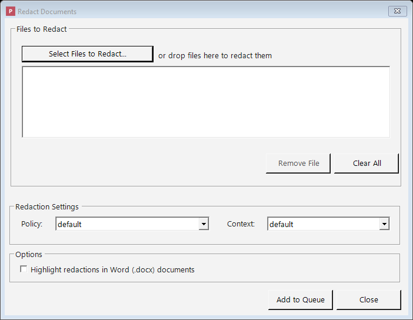

Redacting Documents
This page explains how to add documents, how Philter Desktop redacts them, how to review exactly what was removed, and how to adjust the result.
The redaction queue fills most of the main window. Every document you hand to Philter Desktop appears here as a row, along with its current status, the policy (set of rules) being used, and the context (the consistency setting). Finished documents stay in the list, so you can re-open, compare, or fine-tune them later.
Which kinds of documents you can redact
Philter Desktop works with the document types below. Each has its own page covering how that type is redacted and anything specific to it:
- Plain Text and Rich Text:
.txtand.rtffiles. - Microsoft Word:
.docxfiles. - PDF:
.pdffiles, including scanned PDFs read with OCR. - Spreadsheets: Excel
.xlsxand comma-separated.csvfiles. - Email:
.emland.msgfiles.
The rest of this page describes the parts of redaction that are the same for every document type: adding files, monitoring progress, previewing and adjusting the result, and checking what was removed.
Adding documents to the queue
There are two ways to add files:
- The Redact button. Click Redact on the toolbar. You choose which policy (rule set)
and which context (consistency setting) to use, then select the files to add. Use this when you
want specific rules for a batch of documents. The Redact button has a small arrow beside it;
clicking it opens a menu with: Redact with Preview… (see the result before saving),
Find & Redact… (remove specific words from one file), Redact Spreadsheet… (redact an
.xlsx/.csvwith optional whole-column removal, covered under Spreadsheets), and Redact Folder… (add every supported file in a folder at once). These are described later on this page. - Drag and drop. Drag one or more files from a Windows folder onto the Philter Desktop window. Files added this way use the default policy and the default context.
If a file is already waiting in the queue (or being redacted) with the same policy and context, adding it again is skipped, so you won't get duplicate redactions of the same document. You can still redact a file again after it finishes, or add it with a different policy or context.

Adding files with the Redact button: pick a policy and a context, then add your documents.
What happens after you add a document
Philter Desktop redacts documents automatically in the background. Each row's Status column shows where that document is in the process:
| Status | What it means |
|---|---|
| Pending | The document is in line, waiting its turn. |
| Processing | The document is being redacted now. |
| Completed | The document was redacted successfully and the copy is ready. |
| Failed | Something prevented redaction: for example, the original file was moved or deleted, the file was open in another program, or the chosen policy no longer exists. |
A Completed status shown in amber or red means the document finished but its Verification result needs review (for example, residual PII may remain, or names weren't checked because the name model isn't installed). Hover the row for a short explanation, and check the Verification column.
If a document shows Failed, Philter Desktop records the reason. Hover over the failed row to see it in a pop-up, or right-click the row and choose View Details…, where the reason appears as a "Why it failed" line. The reasons are in plain language, for example: "…could not save 'report.docx' because it is open in another program (such as Microsoft Word or a PDF viewer). Please close it and try again."
Once you've fixed the cause (closed the file, freed up disk space, raised a limit in Settings, and so on), retry the document rather than adding it again:
- Retry: right-click the failed row and choose Retry. The document returns to Pending and is redacted again on the next pass.
- Retry All Failed: right-click anywhere in the queue and choose Retry All Failed to requeue every failed document at once. Useful when a single cause (such as a full disk) affected several documents together.
A document that failed for a permanent reason (such as an unsupported file type) will fail again with the same explanation, so retrying it does no harm.
After an unexpected shutdown
If Philter Desktop closes unexpectedly (a crash, or the computer shutting down) while a document is being redacted, that document could be left showing Processing. The next time you start Philter Desktop, it automatically moves any such interrupted document back to Pending so it is picked up and finished.
Your original document is never changed. Philter Desktop always writes the result to a new,
separate copy, named after the original plus a label. By default the label is _redacted-draft, so
report.docx becomes report_redacted-draft.docx, and it is saved to the location chosen in
Settings. The "draft" label is a reminder to review the file before relying on it.
For Word (.docx) files, the redacted copy also has hidden information (metadata, comments, tracked
changes, and hidden text) cleaned out by default; see Microsoft Word.
Redact a whole folder at once
To redact a folder of documents, click the small arrow beside the Redact button and choose Redact Folder….
In the dialog:
- Choose the folder with Browse… (or type/paste its path).
- Tick Include files in subfolders to also redact documents inside folders within it.
- Pick the policy and the context to use for the whole batch.
- Optionally tick Highlight redactions in Word (.docx) documents.
When you choose a folder, Philter Desktop scans it and reports what it found, for example: "12 files will be added to the redaction queue (5 .pdf, 4 .docx, 3 .txt)." Click Add to Queue and every supported file is added and redacted like any other document, with its own Pending → Processing → Completed (or Failed) status. This is a one-time action: no watched folder is set up, and the folder is not monitored afterward.
- Only supported file types are picked up. Files Philter Desktop can't redact (images, archives, and so on) are skipped, and the count reflects how many files will be processed.
- Previous results are left alone. Files whose name ends with your redacted-file label
(
_redacted-draftby default) are skipped, so running Redact Folder… again won't re-redact earlier drafts. - Per-file results are visible. If one file can't be redacted (for example, a password-protected Word document), that row shows Failed with the reason; the rest of the batch still completes.
- Your originals are never changed. Each redacted copy is written to a new, separate file (see What happens after you add a document above).
Redact with Preview: see the result before you commit
Redact with Preview lets you review the result and save it only once you're satisfied. It is best for working on a single document at a time.
Start it from the Redact button on the toolbar: click the small arrow beside it and choose
Redact with Preview… (or right-click a document and choose the same). It works with .txt,
.rtf, .docx, .pdf, and email (.eml and .msg) files. (Spreadsheets, .xlsx and .csv,
don't have a preview yet; redact them the ordinary way and review the copy afterward.)
You pick the file, choose a policy and a context, and Philter Desktop shows what the
redacted file will look like before anything is written to disk:
- Plain text (
.txt) and rich text (.rtf): a live, side-by-side comparison of the original and the result, plus an editable list of every redaction. You can add, change, or remove individual redactions before saving. (Rich-text formatting is preserved in the saved file; the preview compares the visible text.)- Redact something the detector missed by selecting it. Switch to the Select text to redact tab, highlight the words to remove, and click Redact selection. The redaction is added to the list (marked Added), shows up in the before/after comparison, is applied when you save, and appears in the redaction report as a user-added redaction. You can remove it from the list like any other. (Add… also lets you enter a start and end offset by hand.)
- Microsoft Word (
.docx): a paragraph-by-paragraph comparison showing what will be removed, with an editable list of redactions and an optional highlight setting that marks the replacements for easy review. This preview shows the redacted text, not a full rendering of the finished Word page.- Redact something the detector missed by selecting it. Switch to the Select text to redact tab, highlight the words to remove, and click Redact selection. The redaction joins the list (marked Added), appears in the comparison and the report as a user-added redaction, and can be removed like any other. A selection that crosses paragraphs is split into one redaction per paragraph. (Add… also lets you type an exact paragraph and offset by hand.)
- PDF (
.pdf): the redacted PDF shown side by side with the original, with zoom controls and synchronized scrolling, plus an editable list of the redactions on each page.- Redact a region the detector missed by drawing a box. Turn on Add Redaction (draw) in the side panel, then drag a rectangle over the area to remove on the original (left) page. The box is added to the list (marked Added), the redacted side updates to show it, and it appears in the report as a user-added redaction; select it and click Remove to undo it. Because a redacted PDF is flattened to an image, the area you draw over is genuinely destroyed in the saved file, not merely hidden.
- Email (
.emland.msg): a field-by-field comparison (subject, addresses, and body) showing what will be removed, with an editable list of redactions. Each redaction is anchored to a specific field; you can change its replacement or remove it. Outlook.msgfiles are saved as standard.eml.- Redact something the detector missed in the body by selecting it. Switch to the Select text to redact tab (which shows the message body), highlight the words to remove, and click Redact selection. It joins the list (marked Added) and the report as a user-added redaction, and can be removed again. Manual selection applies to body text; the subject and address headers aren't hand-edited (their detected matches are still removed automatically).
If you change the policy or context while previewing, Philter Desktop re-checks the document and updates the preview. Nothing is saved until you click "Save Redacted File", at which point you choose where to put it. Once saved, the document is added to your queue (marked Completed), so you can re-open, compare, or adjust it later like any other finished document.
The ordinary queue, the watched folders feature, and the command line (described near the end of this page) are better choices when you need to redact many documents at once.
Find & Redact: remove specific words, no policy needed
Find & Redact strikes a few specific words or phrases (such as a name, a project codename, or a client-requested phrase) out of one document, without a policy.
Open it from the Redact button's arrow menu on the toolbar and choose Find & Redact… (or right-click a document in the queue and choose the same; if a document was already selected, its path is filled in). In the window that opens:
- Choose the document to redact (
.txt,.docx,.pdf,.rtf,.xlsx,.csv,.eml, or.msg). - Type the exact terms to remove, one per line, or click Import from file… to load them
from a
.txtor single-column.csvfile. - Click Redact.
Philter Desktop removes every occurrence of those terms (ignoring capitalization), saves a redacted copy alongside the original, then offers to open the containing folder. It doesn't touch your policies, queue, or history.
Use Find & Redact when you know exactly what text to remove. To have Philter Desktop find sensitive information by its kind (every Social Security number, email address, or name), use a policy with the Redact or Redact with Preview actions above. For terms you want removed in every redaction, use the global Lists instead.
Working with the queue
Once a document shows Completed, you have several options:
- Double-click the row to open the redacted file.
- Right-click the row to:
- Open redacted file: open the redacted copy.
- Open original file: open the untouched original.
- Open containing folder: show the redacted file selected in File Explorer.
- View Details…: see a summary of the document: the original file name, the redacted file name, the policy and context used, how many redactions were made, when it was done, and how long redaction took ("Time to redact").
- View Diff…: see a before-and-after comparison (explained below).
- Modify Redaction…: review and adjust what was removed (explained below).
- Export Explanation (JSON)…: save a detailed report of why each item was removed (explained below).
- Remove, Remove completed, or Remove all: take items off the list.
- Retry / Retry All Failed: requeue a failed document (or every failed document) after you've fixed the cause; see What happens after you add a document, above. (Retry is available on a failed row; Retry All Failed whenever any row has failed.)
- Refresh: reload the list.
The list updates as documents are processed, so you rarely need to refresh by hand. A Refresh button is also on the toolbar (and F5 refreshes too), useful when documents were added from the command line or the Explorer right-click menu while Philter Desktop was open.
When you remove several items at once, Philter Desktop asks you to confirm first.
Keyboard shortcuts: F5 refreshes the list, Delete removes the selected document, Enter opens a completed document's redacted file, and Ctrl+O adds files.
Finding a document in a long list
When you have many documents in the queue, two tools help you find the one you want:
- Filter box. Above the list is a box labelled Filter by file name, status, policy, or
context. As you type, the list narrows to the documents that match: type part of a file name, or
type
failedto see only the documents that didn't finish. The status bar shows how many documents are shown (for example, Showing 3 of 40 documents). Clear the box (or press Esc while typing in it) to see the whole queue again. - Sorting. Click any column heading (File Name, Status, Policy, Context, or Verification) to sort by that column. Click the same heading again to reverse the order. A small arrow shows which column is sorted and in which direction. (Sorting by Status groups the documents in order of work: pending, then processing, then completed, then failed.)
Adjusting what was removed (Modify Redaction)
After a document is redacted, Philter Desktop remembers the exact list of items it removed, so you can fine-tune that list without starting over. For example, you might stop hiding a name that's safe to keep, or hide an extra item the detector didn't catch.
Right-click a Completed document and choose Modify Redaction….
The window that opens shows two things:
- A Versions list. The first, automatic redaction is Version 1. Each version is a snapshot of a particular set of redaction choices.
- The list of redactions for the selected version. For each item you'll see its type, the original text, what it was replaced with, the exact character positions it covers, and where in the document it sits.
How versions work
- New Version makes a fresh version by copying the most recent one, so you can experiment while your earlier work is preserved. (Creating a new version from Version 4 gives you a Version 5 that starts out identical to 4.)
- Delete removes the selected version, but Version 1 can never be deleted, because it preserves the original automatic result.
- Selecting a version shows its list of redactions, and any edits you make are saved to that version.
Version 1 is read-only. Because it's the permanent record of the original automatic redaction, you cannot edit or delete its list. To make changes, click New Version first and edit that.
Editing a version's list of redactions
To open a single redaction for editing, double-click it in the list. You can:
- Remove a redaction, for example to stop hiding a name that's safe to keep.
- Edit what a redaction is replaced with (and, for redactions you added yourself, where it sits in the document).
- Add a new redaction by position: tell Philter Desktop where in the document to redact,
then give it the replacement text. What "position" means depends on the document type:
- Plain text (
.txt) and Rich Text (.rtf): the starting and ending character positions. - Microsoft Word (
.docx): which paragraph, plus the start and end positions within that paragraph. - PDF (
.pdf): which page, plus a rectangle on the page.
- Plain text (
Spreadsheets and email: review and adjust, but no manual Add
For spreadsheets (.xlsx, .csv) and email (.eml, .msg), each redaction belongs to a
specific cell or email field rather than a position you can point to. You can still
review the redactions, remove ones you'd rather keep, change the replacement text, and
Redact to regenerate the file, but Add is turned off for these formats (there's no
cell-by-cell "add here" to choose). If you need to remove the entire contents of a column in a
spreadsheet, use Redact Spreadsheet… and tick that column instead. The location column shows
which Cell or Field each redaction sits in.
Redactions are tracked by their position in the document, not by searching for their text. Every redaction, whether Philter Desktop found it automatically or you added it by hand, is re-applied to the exact spot it belongs, even if the same words appear elsewhere in the document.
When your list looks right, click Redact to produce the file from that version. Philter Desktop
re-applies that version's redactions to your original document and writes a fresh copy (Version 1
produces report_redacted-draft.docx, later versions add a number, like
report_redacted-draft_2.docx). Because the file is built from the original, the original document
must still be in its original location. The finished document opens automatically when ready.
Re-redacting produces a new, unverified output, so the document's earlier verification result is cleared (its Verification status returns to not-checked). Run Verify Redaction again on the new copy if you want it re-checked before sharing.
Comparing the original and the cleaned-up copy (View Diff)
Before you rely on a redacted document, confirm what changed. Right-click a Completed item and
choose View Diff… (available for .txt, .docx, .pdf, .csv, and .eml files). This opens a
before-and-after comparison: the original on the left ("Before") and the redacted copy on the
right ("After"). The view is read-only and never changes either file.
Large files. View Diff is turned off for files over 10 MB (the menu item is greyed out and labelled "file too large"). You can still open the original and redacted files directly to review them.
Text, Word, CSV, and email documents (.txt, .docx, .csv, .eml)
A line-by-line comparison keeps matching lines side by side and color-codes the changes:
- Red marks text that was removed.
- Green marks text that was added (the replacements).
- Yellow marks lines that were changed.
Long lines wrap, and the two sides scroll together. For Word documents, the comparison looks at the text Philter Desktop worked on — the paragraphs (body, headers and footers, footnotes, and comments) and the text inside shapes, SmartArt, and charts — one line at a time, rather than the page's fonts, spacing, or layout.
PDF documents (.pdf)
The pages appear side by side as images: each page of the original next to the same page of the redacted copy, so you can visually confirm every redaction. Use Previous and Next to move through the pages, the Fit, 100%, +, and − buttons to zoom, and (when zoomed in) both sides scroll together. Because redacted PDFs are flattened to images, this is a visual comparison rather than a word-by-word text comparison.
Exporting an explanation of a redaction (JSON)
To show your work for a colleague, reviewer, audit, or your own records, export a detailed explanation of a finished redaction. Right-click a Completed document and choose Export Explanation (JSON)….
This saves a .json file that lists, for every item Philter Desktop removed:
- What it was: the original text, and what it was replaced with.
- Why it was flagged: the detector that matched (for example, an email-address or Social Security number detector), the detector's confidence, and (for rule-based detectors) the pattern it matched and the surrounding words.
- Where it was: the position in the document (character position and paragraph for text and Word files; the page and location for PDFs).
A .json file is plain text that other programs can read. (Items you added by hand in Modify
Redaction are included too, marked as user-added.)
The explanation file contains the original sensitive text
Because the report lists the original, un-redacted text of everything that was found (along with the surrounding words), the explanation file is just as sensitive as the original document. Philter Desktop reminds you of this before it saves. Store it somewhere secure, treat it with the same care as the original, and never hand it out in place of the redacted copy.
Checking the result for anything missed (Verification)
A false negative is sensitive text the policy missed that ends up in the redacted copy. To guard against that, Philter Desktop can verify its own work: after redacting, it re-opens the finished output file and runs the detector over it again, looking for anything that still matches.
This runs automatically after each redaction (you can turn it off in Settings → Security), and you can run it any time by right-clicking a Completed document and choosing Verify Redaction.
- If nothing is found, the output passed verification.
- If something is found, it's surfaced loudly: a count of how many items may remain, plus a list showing each item's type, the text still present, and where it is. Fix it by adjusting the policy and redacting again, or by using Modify Redaction, before you share the file.
Verification looks for residual detectable PII in the text it can read back from the output; it is
not a check that every part of the document was preserved. For rich text (.rtf) in particular it
re-scans the body only, so a clean result does not by itself confirm that headers, footers, or
footnotes came through — when that applies, the result is flagged for review (see
Rich Text).
Two ways to scan: broad policy (default) vs. same policy
When you right-click a finished document, Verify Redaction offers two choices:
- With broad policy (recommended, and the default): re-scans with every built-in detector turned on. This is the check that matters most: it can surface kinds of information your policy never looked for (for example, a phone number when your policy only removed email addresses). Because it looks for everything, it may also flag things you chose not to redact, so treat its findings as prompts to review, not as mistakes. The document's own replacement values (such as realistic stand-in names) are not reported.
- With same policy: re-scans using only the same policy that redacted the document. This merely confirms that policy took effect; it cannot find a kind of information the policy never looked for, so it is a limited check.
The automatic check after each redaction uses whichever of these you select in Settings → Security. It uses the broad policy by default.
Seeing a document's verification result later
Each document's most recent result is shown in the Verification column of the queue (Clean, N may remain in red, Names not checked in amber, Check failed, or Not checked), so you can see at a glance which finished documents need attention. Names not checked means the document was redacted but on-device name detection wasn't available (the model isn't installed), so person names may remain — review it. The same result, with the time it was checked, also appears in View Details (right-click a document). Running Verify Redaction again refreshes it.
Verification reads the written output, not an in-memory copy, so it also catches any problem in how a particular format was saved. Like everything else in Philter Desktop, it runs entirely on your device: nothing is sent anywhere. The result is included in the redaction report below.
Verification is a safety net, not a guarantee
A "passed" result means no built-in detector found anything remaining (aside from the document's own replacements). It can't prove a document is free of every possible identifier. Always give an important document a human review as well.
Generating a redaction report (a shareable certificate)
To prove what was done for a case file, a client, or a compliance record, generate a redaction report. Right-click a Completed document and choose Generate Report….
Philter Desktop first asks whether to include a detailed per-redaction table, then saves the report as a PDF and opens it. The report summarizes the redaction:
- The source and redacted file names, and a SHA-256 fingerprint of each file (so the report is tied to exactly those documents and any later change is detectable).
- The policy and context used, the Philter Desktop version, and the date and time.
- A count of what was removed, by type (for example, 7 Email Address, 3 Ssn) and the total.
- The verification result (when verification has run): whether the output passed, or how many items may remain.
- If you chose the detailed table: a row per redaction with its type, location, and replacement.
The report is saved as a new file next to your other output; your original and redacted files are not touched.
The report is safe to share: it contains no original text
Unlike the explanation file below, a redaction report never includes the original, un-redacted text (not even in the detailed table, which shows only the type, location, and replacement). That makes the report safe to file alongside, or hand out with, the redacted copy. When you need the actual detected text for your own secure records, use Export Explanation (JSON) instead.
For advanced users and IT: redacting from a command line
This section is optional and aimed at technical users. Everything Philter Desktop does is available through the normal window; this option exists mainly so an IT department can automate redaction.
Philter Desktop can redact files without opening its window, which is useful for automation. Run it from a command prompt (Command Prompt or PowerShell) and pass one or more files, optionally naming a policy and context:
PhilterDesktop.exe /p mypolicy /c mycontext file1.pdf file2.pdf file3.pdf
/por--policy: the name of the policy (rule set) to use. Optional; if you leave it off, the default policy is used./cor--context: the name of the context (consistency setting) to use. Optional; if you leave it off, the default context is used.--highlight: highlight the replacements in redacted Word (.docx) documents so they are easy to spot during review (the same option offered for watched folders and in the main window). Optional and off by default; it has no effect on other file types./hor--help: show a short usage reminder.
Each file is redacted into a copy with the usual _redacted-draft label (saved according to your
output-location setting); originals are never changed. The supported types are .txt,
.docx, .pdf, .rtf, .xlsx, .csv, .eml, and .msg (an .msg is redacted to an .eml; see
Email). On finishing, it reports a result code: 0 means everything
succeeded, 1 means at least one file failed, and 2 means the command was typed incorrectly or
an unknown policy was named.
Run it from a terminal window to see the result for each file. This mode never opens the main window and works even when Philter Desktop is already open, which makes it suitable for the Windows Explorer right-click menu described below.
To redact from a Windows folder without the command line, turn on the Explorer right-click menu in Settings. You can then right-click files in any folder, and Philter Desktop opens a dialog where you choose the policy and context and add the files to the queue.
A reminder about what gets removed
What Philter Desktop looks for, and how it replaces what it finds, is decided by the policy assigned to each document. To change what's removed or how it's replaced, see Policies and Filter Strategies.